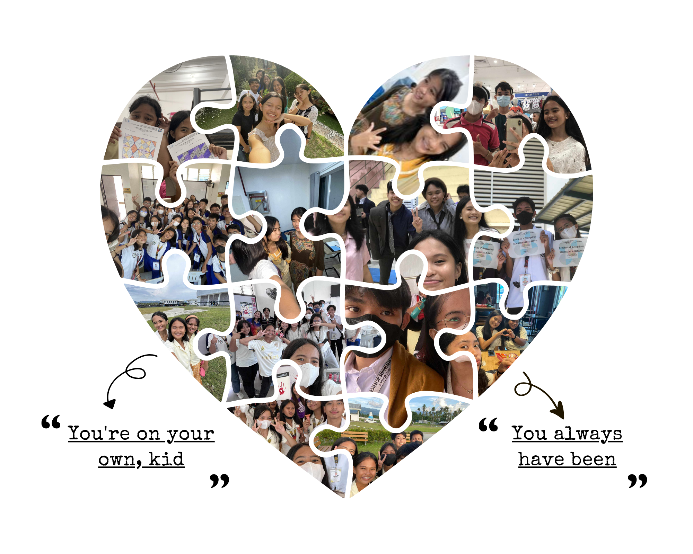

ＭＩＤＮＩＧＨＴ
- "Midnights" features artist Lana Del Rey in one of the songs.
- "Midnights" is Taylor Swift's 10th studio album, released around October 2022.
- It has 13 tracks and 7 additional vault tracks, marking Taylor's return to pop after 2 years of folk music.
- "Midnights" is somehow different from the other albums because it's Taylor doing everything all at once, blending many genres into one. 😎 You could cry in one song and dance to the next.
- - - - - -
𝒴𝑜𝓊’𝓇𝑒 𝑜𝓃 𝒴𝑜𝓊𝓇 𝒪𝓌𝓃, 𝒦𝒾𝒹 ( 𝓉𝒶𝓎𝓁𝑜𝓇'𝓈 𝓈𝓌𝒾𝒻𝓉 𝓋𝑒𝓇𝓈𝒾𝑜𝓃 )
So, make the friendship bracelets, take the moment and taste it
𝒀𝒐𝒖'𝒗𝒆 𝒈𝒐𝒕 𝒏𝒐 𝒓𝒆𝒂𝒔𝒐𝒏 𝒕𝒐 𝒃𝒆 𝒂𝒇𝒓𝒂𝒊𝒅

click on the image to see the music lyric video!